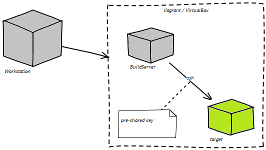

{{ message }}
By using the included Vagrant file, a quickstart environment can be created from the CDAF package.
Tested on Ubuntu (14.04 and above), CentOS (6 and above), RHEL (7) and Mac OS X (Snow Leopard).
To support loopback testing on localhost, provisioning a deployer account and apply a PKI key.
Note: For Mac OS X, see the Mac quick start page.
Download and extract the CDAF package. To validate the downloaded framework:
curl -s http://cdaf.io/static/app/downloads/cdaf.sh | bash -
./automation/remote/capabilities.sh
To provision, create a deployer user and target directory, set a password for the deploy user.
./automation/provisioning/addUser.sh deployer
./automation/provisioning/mkDirWithOwner.sh /opt/packages deployer
sudo passwd deployer
Run the agent pre-shared key utility, press enter three times when prompted to generate the key, do not enter a passphrase.
./automation/provisioning/agent.sh deployer@localhost
Initialise the solution and re-run the emulator, this time no build, local or remote tasks are performed...
mkdir automation-solution
cp ./automation/solution/CDAF.solution ./automation-solution
./automation/cdEmulate.sh
Create a build task in the a project directory (name is Project in this example)
mkdir Project
echo "REMOVE bin" > Project/build.tsk
echo "EXITIF \$ACTION" >> Project/build.tsk
echo "# Following will be executed when performing ACTION is not populated" >> Project/build.tsk
echo "PROPLD \$SOLUTIONROOT/CDAF.solution" >> Project/build.tsk
echo "MAKDIR bin" >> Project/build.tsk
echo "VECOPY \$SOLUTIONROOT/CDAF.solution bin/pretend.jar" >> Project/build.tsk
./automation/cdEmulate.sh
Once the Project Build is validated, gather the resulting artefacts for packaging. Create a the artefact definition file in your solution.
echo "Project/bin/*.jar" > automation-solution/storeForRemote
./automation/cdEmulate.sh
Copy and add the target definitions (localhost and Vagrant) to the solution and define a task to perform on the target
cp ./automation/solution/propertiesForRemoteTasks ./automation-solution -r
echo "ls -l Project/bin" > automation-solution/tasksRunRemote.tsk
./automation/cdEmulate.sh
Simple imcrimental script runner (postgresql only).
{% endblock %}